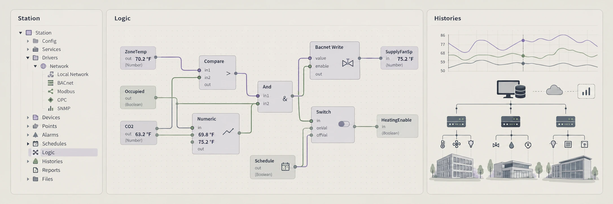

Tridium Niagara 4ENGINEERING CONCEPT
REMOTE ENGINEERING SUPPORT
Tridium Niagara 4
- Station architecture and equipment organization
- Wiresheet logic, schedules, alarms, and histories
- Point integration, naming, tagging, and data structure
Scope & compatibility
Niagara Framework connects building systems and operational information. Our scope brings station engineering, integration, graphics, and performance analysis together around your installed environment.
Version, drivers, modules, controller capability, and licensing are confirmed during scoping.
THE ENGINEERING DETAIL
Station structure, integration and operator services.
Coordinate JACE and Supervisor roles with the approved field-control strategy. Our Niagara work package connects point integration, station organization, graphics, alarm configuration and histories to the project sequence.
What we confirm before engineering
- Installed Niagara release, modules, drivers and license capacity
- Equipment hierarchy, point naming, scaling, Fahrenheit units and quality
- Alarm destinations, history collection and agreed backup responsibilities
What the work package can include
- Station and point-mapping structure
- Application review and graphic-binding checks
- Release notes, supported backups and open-item record
A maintainable Niagara station starts with structure ↗BACnet and Modbus integration: beyond a discovered point ↗
Manufacturer reference: Tridium Niagara Supervisor ↗